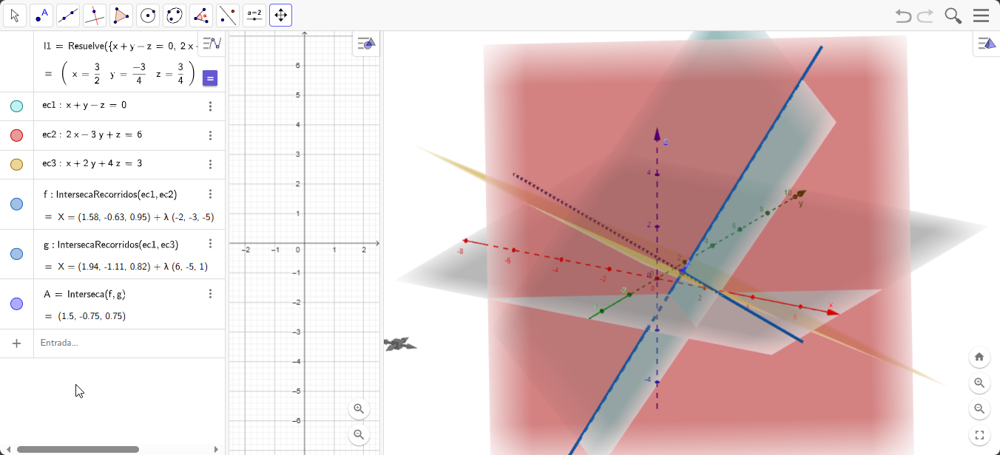

Esta mini web contiene los pasos detallados donde resuelvo el siguiente sistema de ecuaciones lineales usando el método de Gauss-Jordán:
Sistema de ecuaciones:
| x + y - z | = | 0 |
| 2x - 3y + z | = | 6 |
| x + 2y + 4z | = | 3 |
Tenemos un sistema de 3 ecuaciones con 3 incógnitas (x, y, z):
Sistema de ecuaciones:
| x + y - z | = | 0 |
| 2x - 3y + z | = | 6 |
| x + 2y + 4z | = | 3 |
El primer paso es escribir la matriz aumentada del sistema. Tomamos los coeficientes de cada variable y el término independiente:
| 1 | 1 | -1 | | | 0 |
| 2 | -3 | 1 | | | 6 |
| 1 | 2 | 4 | | | 3 |
Nuestro objetivo es transformar esta matriz en la forma escalonada reducida por filas, donde tendremos unos en la diagonal principal y ceros en las demás posiciones.
Notamos que ya tenemos un 1 en la posición (1,1), lo cual es excelente para comenzar. Lo usaremos como pivote para eliminar los elementos debajo de él.
Operación 1: F2 = F2 - 2·F1 (Restamos 2 veces la fila 1 de la fila 2)
Esto nos permitirá convertir el 2 en la posición (2,1) en un 0.
| 1 | 1 | -1 | | | 0 |
| 0 | -5 | 3 | | | 6 |
| 1 | 2 | 4 | | | 3 |
Cálculos detallados para la fila 2:
Operación 2: F3 = F3 - F1 (Restamos la fila 1 de la fila 3)
Esto nos permitirá convertir el 1 en la posición (3,1) en un 0.
| 1 | 1 | -1 | | | 0 |
| 0 | -5 | 3 | | | 6 |
| 0 | 1 | 5 | | | 3 |
Cálculos detallados para la fila 3:
Ahora necesitamos convertir el elemento (2,2) en un 1 dividiéndolo por -5.
Operación 3: F2 = F2/(-5) (Dividimos la fila 2 por -5)
| 1 | 1 | -1 | | | 0 |
| 0 | 1 | -3/5 | | | -6/5 |
| 0 | 1 | 5 | | | 3 |
Cálculos detallados para la fila 2:
Ahora necesitamos eliminar el elemento (3,2) restando la fila 2 de la fila 3.
Operación 4: F3 = F3 - F2 (Restamos la fila 2 de la fila 3)
| 1 | 1 | -1 | | | 0 |
| 0 | 1 | -3/5 | | | -6/5 |
| 0 | 0 | 5 - (-3/5) | | | 3 - (-6/5) |
Cálculos detallados para la fila 3:
Simplificando la fila 3:
| 1 | 1 | -1 | | | 0 |
| 0 | 1 | -3/5 | | | -6/5 |
| 0 | 0 | 28/5 | | | 21/5 |
Ahora necesitamos convertir el elemento (3,3) en un 1 dividiéndolo por 28/5.
Operación 5: F3 = F3/(28/5) (Dividimos la fila 3 por 28/5)
| 1 | 1 | -1 | | | 0 |
| 0 | 1 | -3/5 | | | -6/5 |
| 0 | 0 | 1 | | | (21/5)/(28/5) = 21/28 = 3/4 |
Cálculos detallados para la fila 3:
Ahora tenemos la matriz en forma escalonada:
| 1 | 1 | -1 | | | 0 |
| 0 | 1 | -3/5 | | | -6/5 |
| 0 | 0 | 1 | | | 3/4 |
Ahora comenzamos la fase de eliminación hacia atrás para obtener ceros por encima de la diagonal principal.
Primero, usaremos la fila 3 para eliminar los elementos en la columna 3 por encima de ella.
Operación 6: F1 = F1 + F3 (Sumamos la fila 3 a la fila 1)
| 1 | 1 | 0 | | | 0 + 3/4 = 3/4 |
| 0 | 1 | -3/5 | | | -6/5 |
| 0 | 0 | 1 | | | 3/4 |
Cálculos detallados para la fila 1:
Operación 7: F2 = F2 + (3/5)·F3 (Sumamos 3/5 veces la fila 3 a la fila 2)
| 1 | 1 | 0 | | | 3/4 |
| 0 | 1 | 0 | | | -6/5 + (3/5)(3/4) |
| 0 | 0 | 1 | | | 3/4 |
Cálculos detallados para la fila 2:
Finalmente, usaremos la fila 2 para eliminar el elemento en la columna 2 por encima de ella.
Operación 8: F1 = F1 - F2 (Restamos la fila 2 de la fila 1)
| 1 | 0 | 0 | | | 3/4 - (-3/4) = 3/4 + 3/4 = 6/4 = 3/2 |
| 0 | 1 | 0 | | | -3/4 |
| 0 | 0 | 1 | | | 3/4 |
Cálculos detallados para la fila 1:
Hemos obtenido la matriz escalonada reducida por filas:
| 1 | 0 | 0 | | | 3/2 |
| 0 | 1 | 0 | | | -3/4 |
| 0 | 0 | 1 | | | 3/4 |
A partir de esta matriz, podemos leer directamente la solución del sistema:
Comprobación de la solución:
Sustituyendo los valores en las ecuaciones originales:
Ecuación 1: x + y - z = 0
3/2 + (-3/4) - 3/4 = 3/2 - 3/4 - 3/4 = 6/4 - 3/4 - 3/4 = 6/4 - 6/4 = 0 ✓
Ecuación 2: 2x - 3y + z = 6
2(3/2) - 3(-3/4) + 3/4 = 3 + 9/4 + 3/4 = 3 + 12/4 = 3 + 3 = 6 ✓
Ecuación 3: x + 2y + 4z = 3
3/2 + 2(-3/4) + 4(3/4) = 3/2 - 6/4 + 12/4 = 6/4 - 6/4 + 12/4 = 12/4 = 3 ✓
Todas las ecuaciones se verifican correctamente, por lo que la solución es válida.
GeoGebra
Esta visualización confirma que nuestro sistema tiene una única solución, y que los tres planos definidos por las ecuaciones se intersectan en un solo punto.
En este ejercicio hemos aplicado el método de eliminación de Gauss-Jordán para resolver un sistema de tres ecuaciones lineales con tres incógnitas:
La solución obtenida es: x = 3/2, y = -3/4, z = 3/4